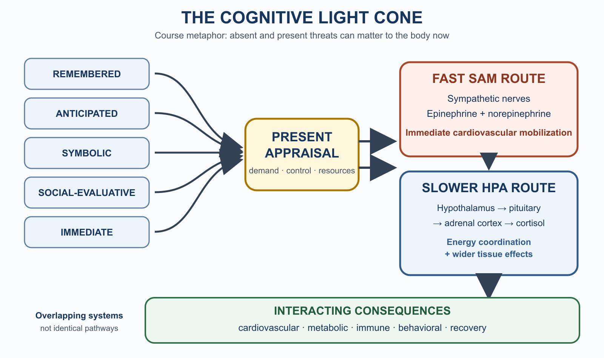

Emotion, Stress & Coping
Most people think of emotions the way they think of a smoke alarm: a real-world event triggers a circuit, the circuit fires, and out comes a feeling. Fear when threatened. Joy at good news. Disgust at something rotten. On this view, emotions are hardwired responses to situations — relatively automatic, relatively fixed, and not really yours to control.
The neuroscience of the last thirty years has been quietly complicating this picture. One influential contemporary framework — developed in detail by neuroscientist Lisa Feldman Barrett — holds that emotions are not triggered but constructed. Your brain is not passively waiting for the world to set off emotional circuits. It is running a continuous prediction system, using your past experiences, your learned concepts, your current body state, and the context around you to generate an emotional experience from the inside out. You are, in a meaningful sense, the author of your emotions — though not in the way motivational posters suggest.
Saying emotions are constructed does not mean they are imaginary, arbitrary, or consciously chosen. It means the brain builds emotional experience from body signals, context, past learning, and emotion concepts — and many of these constructions happen automatically and feel entirely involuntary. The practical implication is not "just decide to feel differently." It is that changing the inputs to the construction — your body state, your emotion concepts, your context — is more effective than trying to suppress a construction after it has already occurred.
This reframing has a practical edge. If emotions are constructed predictions, not hardwired triggers, then the most powerful ways to regulate them are not about suppressing reactions after the fact. They are about changing what goes into the construction: what you know about your own body, how precisely you can name what you feel, how well you maintain the basic resources your brain needs to run the system accurately.
This chapter traces that argument from the biology of body regulation through the nature of emotion to the psychology of stress and coping.
College students consistently underestimate how much their emotional life is affected by basic maintenance factors — sleep, food, exercise, social contact. This chapter provides the biological rationale for why those factors are not incidental to emotional regulation but central to it.
Learning Objectives
- Distinguish allostasis from homeostasis and explain the concept of the body budget.
- Define interoception and core affect, and explain how the brain uses them to construct emotional experience.
- Identify the James-Lange, Cannon-Bard, and Schachter-Singer theories and explain what Barrett's constructionist account adds.
- Define emotional granularity and describe the affect-labeling effect and its implications.
- Describe Selye's General Adaptation Syndrome and its three stages.
- Contrast fight-or-flight and tend-and-befriend stress responses, and explain the concept of allostatic load.
- Distinguish problem-focused from emotion-focused coping and identify conditions under which each is more effective.
Where This Fits
How does the body decide what matters? This chapter traces the same loop the last several chapters have each shown from a different angle — partial input, compressed into a model, used to predict, revised when the prediction fails — from the inside: emotion is that loop's live readout of what currently matters for the body's welfare, and stress is what happens when its predictions about demand and control keep coming back wrong.
Chapter 3 supplied the biological hardware this chapter puts to work — the sympathetic nervous system, the HPA axis, cortisol, and the orchid/dandelion account of why the same stressor lands differently on different nervous systems. Chapter 7's dopamine material is a related but separate signal: dopamine tracks reward prediction error, while this chapter's appraisal and body-budget prediction track demand, control, and welfare — two links in the same chain, not the same signal twice. Chapter 13 picks up where this one ends: when stress stops resolving and coping breaks down, the result is clinical-level disruption of the systems described here.
Section 1: The Body Budget — Allostasis and Interoception
Beyond Homeostasis
You probably learned in biology that the body maintains stable internal conditions — temperature, blood sugar, pH — through homeostasis: mechanisms that detect deviations from a set point and correct them. Homeostasis is a reactive system. It responds to disruption after it has already occurred.
Neuroscientists studying how the brain actually manages the body have proposed a different and more accurate picture: allostasis — the maintenance of stability through anticipatory change. Rather than waiting for blood glucose to drop and then triggering hunger, the brain predicts what the body will need before the need becomes critical, and begins preparing in advance (McEwen, 1998b; Sterling & Eyer, 1988). You get hungry before you are depleted. You feel alert before you need to act. You become anxious before a threat materializes.
The difference matters. Homeostasis is a thermostat that kicks on when the house gets cold. Allostasis is a thermostat that learns your schedule and preheats the house before you wake up. The brain is running an allostatic system — a continuous forward model of what the body will need, updated by every scrap of incoming information.
Barrett (2017a) uses the term body budget to describe this allostatic management: the brain continuously tracks and predicts the body's expenditure and income of metabolic resources — glucose, oxygen, water, salt — as well as social and psychological resources. Every action you take, every experience you have, every relationship you maintain draws on or deposits into this budget. When the budget is well-managed, you feel well. When it is depleted or thrown into deficit, you feel bad — not bad in a specific emotional way necessarily, but in the background sense of everything being more effortful, more aversive, more threatening than it otherwise would be.

Interoception: Reading the Budget
How does the brain know the state of the budget? Through interoception — the ongoing sensory monitoring of internal body states. The brain receives a continuous stream of signals from the heart, lungs, gut, muscles, skin, and immune system. Heart rate, blood pressure, body temperature, muscle tension, gut motility, inflammatory markers — all of this feeds back to brain regions including the insula and anterior cingulate cortex, which integrate interoceptive signals with predictions and context.
Interoception is not infallible. The brain does not passively read the body's current state — it predicts what the body state probably is, based on past experience, and uses interoceptive signals mainly to correct those predictions when they are wrong. This means that your felt sense of your body is partly constructed from expectation rather than directly from sensation. A well-calibrated interoceptive system produces accurate body-state representations; a poorly calibrated one can generate chronic background discomfort, misread fatigue as illness, or fail to detect genuine physiological signals that need attention.
Core Affect: The Two Dimensions of Feeling
Before any specific emotion is constructed, there is something more basic: a continuous background quality of experience that psychologist James Russell (1980) called core affect. Core affect has two dimensions:
- Valence — whether your current state feels pleasant or unpleasant, good or bad
- Arousal — whether your current state feels activated (energized, alert, agitated) or deactivated (calm, sluggish, tired)
Every moment of waking life has some position in this two-dimensional space. Right now, reading this, you are somewhere on that map — perhaps mildly pleasant and moderately aroused; perhaps slightly unpleasant and low-arousal. Core affect is not an emotion. It is the raw material from which emotions are constructed.

What are the two dimensions of core affect? Why is core affect not the same thing as an emotion?
The body budget connection is direct: a depleted budget shifts core affect toward the unpleasant end of the valence dimension. Sleep deprivation, hunger, dehydration, chronic social isolation, and sustained workload without recovery all move your resting valence in the negative direction. This is why everything feels harder under those conditions — not because those specific situations are objectively more threatening, but because your interoceptive baseline has shifted, and that shift colors the construction of every experience.
Think about a time when something minor set off an outsized emotional reaction. Is it possible that a depleted body budget — stress accumulation, poor sleep, not eating — contributed to the intensity of the reaction? This is not a rhetorical question; research on decision-making and emotional reactivity consistently supports this interpretation.
Section 2: Emotions Are Constructed
What the Classic Theories Got Right (and Wrong)
Before Barrett's framework, emotion research organized itself around competing theories of bodily arousal and felt experience. Each captured something real about emotion but left key pieces unexplained.
| Theory | Basic sequence | What it got right | Main limitation |
|---|---|---|---|
| James-Lange (James, 1884) | Event → body change → emotion | Bodily states do influence emotional experience; interoceptive awareness tracks emotion intensity | Arousal patterns are too similar across emotions to account for their variety |
| Cannon-Bard (Cannon, 1927) | Event → simultaneous arousal + emotion (independent) | The arousal-similarity problem is real; subcortical structures matter | Left the mechanism of distinct subjective experience unexplained |
| Schachter-Singer two-factor (Schachter & Singer, 1962) | Undifferentiated arousal + context label → emotion | Context and cognition shape which specific emotion is experienced | Classic findings difficult to replicate (Marshall & Zimbardo, 1979; Maslach, 1979); cognition treated as a label applied after arousal rather than as integral to the construction |
| Constructed emotion (Barrett, 2017b) | Interoception + core affect + emotion concepts + context → constructed instance | Integrates body state, prediction, and meaning; grounded in modern neuroimaging | Still an active area of debate; not the only current model in emotion science |
None of the first three theories fully captured the predictive, constructed nature of emotional experience — what Barrett's framework, described next, attempts to address.
Barrett's Constructionist Account
Barrett's theory of constructed emotion (2017b) proposes that the brain does not receive a stimulus, fire a dedicated emotion circuit, and output a feeling. Instead, it continuously generates predictions about the world and about the body's current state, compares those predictions to incoming sensory data, and uses any mismatch between prediction and input to update its model. Emotion is not a readout of a dedicated circuit — it is a prediction the brain makes about what is happening, grounded in interoceptive signals, colored by core affect, and given meaning by the emotion concepts the person has learned.
In concrete terms: when you encounter a situation your brain predicts as relevant to your wellbeing, it uses your past experience in similar situations, your current interoceptive state, and the available context to construct an emotional instance — a specific experience of, say, dread or apprehension or unease, rather than a generic "negative arousal." The more precise and differentiated your learned emotion concepts, the more precisely the brain can construct an experience that accurately represents what is happening and guides an effective response. Emotions are not stored in a library and retrieved; they are built fresh each time, from available materials.
This has important implications. There are no dedicated "fear circuits" or "anger circuits" in the brain in the way the older view implied — the amygdala, often called the brain's fear center, is better understood as a relevance-detection system that contributes to the construction of many emotion types, not just fear (LeDoux, 2012; Barrett, 2017b). The neural architecture of emotion is distributed and multipurpose, not modular and emotion-specific.
The question: When the amygdala is destroyed, what actually breaks — the capacity to know a situation is dangerous, or the capacity to feel afraid of it?
The evidence: Patient SM has rare bilateral amygdala damage from a genetic condition (Urbach-Wiethe disease). Early testing found she could not recognize fear from facial expressions, even though she recognized other emotions and personal identity normally (Adolphs, Tranel, Damasio, & Damasio, 1994). Later work went further: researchers exposed her directly to live snakes and spiders, took her through a haunted house, and showed her frightening films. She reported almost no fear on any of these occasions, despite a personal history that included real trauma (Feinstein, Adolphs, Tranel, & Damasio, 2011). Separately, she was found to lack an ordinary sense of personal space — standing uncomfortably close to strangers and rating an experimenter's nose-to-nose proximity as entirely comfortable, a situation in which healthy participants' amygdalae reliably activate (Kennedy, Gläscher, Tyszka, & Adolphs, 2009).
Why it matters: SM can describe, in the abstract, that a snake or a stranger standing too close should be concerning. What she cannot do is generate the felt urgency — the affective prediction that something matters enough to act on. That is exactly the distinction this section has been building toward: the amygdala is not a fact-store and not a single "fear center." It is closer to a relevance-detector that helps convert a situation into an actionable, felt prediction. Take it out, and the facts survive; the mattering does not. Chapter 5 already introduced the amygdala as a fast, non-conscious relevance-tagging system for attention and threat; this case shows concretely what's lost when that tagging system is gone.
Some caution: SM is a single case, and researchers continue to debate how specific her deficit is to fear versus threat appraisal more broadly.
The question: Does putting an emotion into words change how intensely you experience it?
The evidence: A program of research using functional neuroimaging found that when participants labeled the emotional expression they were viewing — saying "this face looks afraid" — amygdala activation to that emotional stimulus was reduced compared to other ways of processing the same stimulus (Lieberman et al., 2007). Putting the feeling into words recruited ventrolateral prefrontal cortex, a region involved in symbolic processing, and this appeared to dampen the subcortical response. Torre and Lieberman (2018) reviewed over two decades of this research, concluding that affect labeling functions as an implicit form of emotion regulation — it reduces emotional intensity even when people are not trying to regulate.
Why it matters under the constructionist model: If emotions are constructed partly from emotion concepts, then having and using a precise concept for your current state gives the brain a more accurate prediction for what is happening — which means less prediction error to resolve, and a more calibrated response. The amygdala effect reflects the brain updating its predictions rather than escalating arousal. You are not suppressing the emotion; you are constructing a more accurate one.
The practical implication: Journaling, talking to a friend, therapy — all of these work partly through this mechanism. They give you language for body states that were previously undifferentiated, and that language improves the brain's ability to respond adaptively.
Emotional Granularity
This connects to the concept of emotional granularity: the degree to which a person makes fine-grained distinctions among their emotional states, rather than experiencing everything as broadly "good" or "bad" (Kashdan, Barrett, & McKnight, 2015). A person with high granularity distinguishes between being anxious about a specific outcome, frustrated by an obstacle, disappointed by a person, and dreading an anticipated event — all states that might collectively register as "feeling bad" to a low-granularity person.
A growing body of research links higher emotional granularity — particularly for negative emotions — to better coping with stressors, lower rates of depression and anxiety, less aggressive responding under provocation, and more effective use of emotion-regulation strategies (Kashdan et al., 2015). The mechanism is consistent with the constructionist account: more precise emotion concepts produce more accurate body-budget predictions, which enable more targeted regulatory responses. If you know you are frustrated rather than threatened, you know that the adaptive response is problem-solving, not defense — and you can act accordingly.
Consider the practical difference. The label "I feel bad" gives the brain little guidance — every diffuse negative state calls for the same vague response. The label "I am disappointed because I expected support and did not receive it" points toward a specific situation, a specific person, and a specific range of possible responses (seek a conversation; adjust expectations; find support elsewhere) that are quite different from what "I am anxious because an important outcome is still uncertain" would call for (gather information; develop contingency plans; practice tolerating uncertainty). Granularity is not just emotional vocabulary — it is precision guidance for action.
Emotional granularity is not a fixed trait, though the intervention literature on how to cultivate it is still developing. Practices like deliberate attention to body states and building a richer vocabulary for internal experience — through introspective journaling, reading fiction, or emotionally rich conversation — may support its growth, though well-controlled intervention studies are limited.
An emotion is a short-duration, high-intensity, context-directed constructed experience — it is about something specific. Mood is a more diffuse, lower-intensity background state that persists across time without a clear referent. Under the constructionist model, mood is closely related to core affect and body-budget state: a sustained budget deficit produces a persistently negative mood, which then lowers the threshold for constructing negative emotions in response to minor events. This is why sustained stress and poor self-care compound: mood shifts the baseline from which every emotional construction begins.
A Note on Basic Emotions
Ekman's claim that there is a small set of universal, biologically fixed emotions with distinctive facial expressions (Ekman, 1992) has genuine empirical support at the level of cross-cultural recognition — people across cultures do show reasonable agreement in identifying posed facial expressions of happiness, sadness, anger, fear, disgust, and surprise. However, a major review of the facial expression literature concluded that facial movements are not reliable readouts of internal emotional states independent of context — the same facial configuration can accompany quite different experiences depending on the situation (Barrett et al., 2019). Under the constructionist account, cross-cultural recognition does not require that these are innate discrete categories. It is consistent with humans universally sharing similar bodies with similar needs (and therefore similar categories of body-budget events to represent), while also having considerable cross-cultural variation in how those states are conceptualized, experienced, and expressed (Barrett, 2017a; Mesquita, 2001). The recognition evidence is meaningful; what it proves about hardwired, context-independent emotion circuits is what remains actively debated.
Section 3: Stress — The Budget Under Pressure
Allostasis is the ordinary, ongoing predictive system managing the body budget right now, with no stressor in sight. Stress isn't a separate system — it's what allostasis looks like when it's facing a demand that outstrips what it can predict or meet. Every stress response is allostasis at work; not every instance of allostasis is stress.
What Is Stress?
Stress is the state that arises when perceived demands exceed perceived coping resources (Lazarus & Folkman, 1984). A stressor is the event or condition that triggers this appraisal. As Chapter 3 established, the stress response is biological — it mobilizes the body's resources for meeting a demand. Under the body-budget framing, stress is what happens when the allostatic system faces demands it cannot easily predict or meet: unexpected threats, sustained high-demand, and chronically unresolved challenges all constitute body-budget emergencies.
Whether a given event becomes a stressor depends substantially on appraisal — how you evaluate it. Primary appraisal asks: Is this relevant to my wellbeing? Is it threatening, harmful, or challenging? Secondary appraisal asks: Do I have the resources to cope? The interaction between these determines the magnitude of the stress response: high perceived demand + low perceived coping resources = high stress, independent of the objective severity of the situation. This explains why the same exam, the same presentation, the same confrontation is crushing for one person and manageable for another.
Why Human Stress Goes Chronic
Chapter 3 introduced the contrast: a zebra's stress response mobilizes fully for the minute it takes to escape a lion, then shuts off completely once the threat is gone or the zebra is dead (Sapolsky, 2004). Humans run the same ancient mobilization machinery, but on a very different range of things that count as a threat. The same capacity that lets you plan, remember, and imagine — mental time travel into a past that no longer exists and a future that hasn't happened yet (Suddendorf & Corballis, 2007; Schacter, Addis, & Buckner, 2007) — also means a threat does not need to be physically present to activate the stress response. An imagined layoff, a remembered failure, a symbolic insult, an uncertain diagnosis, or someone else's opinion of you can all trigger appraisal and mobilization, and none of them resolve the way a chased-down zebra's threat does.
This wider range of things that can matter to the organism right now — remembered pasts, imagined futures, other people's judgments, symbolic and financial threats, possible selves — is sometimes called the human cognitive light cone: not a technical term from neuroscience, but a useful description of everything the simulation-capable brain can treat as a live concern. It is the same predictive capacity that makes planning and foresight possible, running on a stress-response system built for acute physical emergencies, not sustained abstract ones. The exhaustion stage of the General Adaptation Syndrome, described next, is what that machinery looks like when it is left running against a threat that exists only in simulation.

The General Adaptation Syndrome
Selye's actual discovery, in the 1930s, was an accident. Trying to isolate a new ovarian hormone, he injected rats with ovarian extract and found consistent damage — enlarged adrenal glands, shrunken thymus and lymph tissue, bleeding stomach ulcers. It looked like a hormone effect until he ran a control injection: formalin, a toxic preservative with no hormonal activity. The control rats showed the identical triad. Whatever produced this pattern wasn't specific to any substance — it was a generic response to something noxious happening to the animal (Selye, 1956). That result is why the syndrome he named is defined by nonspecificity: the body doesn't run a different stress response for every different threat. It runs one, whether the trigger is a predator, a toxin, or — this chapter's argument — a remembered failure.
Selye called the resulting three-stage pattern the General Adaptation Syndrome (GAS):
| Stage | What's happening | Cost |
|---|---|---|
| Alarm | HPA axis activates, cortisol releases, sympathetic nervous system engages; energy redirects from long-term maintenance (digestion, immune function, reproduction) to immediate action | Minimal, if brief |
| Resistance | Body stabilizes at an elevated response level, keeps coping while the stressor continues | Resources consumed, not yet depleted |
| Exhaustion | Reserves run out; the elevated response can no longer be sustained | Immune suppression, illness vulnerability; organ failure in extreme cases |
![The three stages of Selye's General Adaptation Syndrome. Alarm: threat perceived, SAM and HPA systems activate, energy mobilizes (hypothalamus → pituitary → adrenal glands → rising cortisol). Resistance: the body maintains elevated activation under sustained demand — ongoing effort, coping continues, resources consumed. Exhaustion: the depleted body budget shows as reduced immune function and fatigue. The bottom graph plots available resources/functional capacity over time, dropping sharply through exhaustion to roughly 15–25% remaining. Useful in the short run; costly when left running.](../images/ch12/fig_general_adaptation_syndrome.png)
Selye's framework is incomplete on its own — it understates psychological appraisal and was built primarily from extreme physical stressors in rodents. But the core logic holds: the stress response is adaptive in the short run and costly in the long run, and which one you get depends on duration.
Fight-or-Flight and Tend-and-Befriend
The fight-or-flight response is the sympathetic nervous system's acute mobilization to perceived threat — increased heart rate and blood pressure, epinephrine and norepinephrine release, blood diverted to muscles, airways dilated, digestion suppressed. Described by Cannon (1929) from studies of emotional arousal in cats, it is a genuinely adaptive acute response to physical threats. It is poorly matched to chronic psychological stressors — sustained activation of this system with no resolution is a primary driver of stress-related health costs.
Taylor and colleagues (2000) noted that the fight-or-flight framework was built largely on research with male animals and may not fully characterize female stress responses. They proposed the tend-and-befriend model: particularly in females, acute stress elicits a pattern of nurturing behavior (tending offspring and close others) and social affiliation (seeking support and safety in numbers). This pattern appears to be mediated in part by oxytocin — a neuropeptide involved in social bonding and affiliation — whose effects may be enhanced by estrogen. The evolutionary logic is straightforward: for females with dependent offspring, fighting or fleeing is often not the most viable stress response; affiliating with trusted others and protecting young is. Sex differences in affiliative responses to stress are consistent in human and non-human animal research, though the difference is statistical, not categorical — males also show affiliative stress responses, and the full picture involves multiple hormonal and socialization factors. This is the same neuropeptide mechanism Chapter 10 described buffering caregiver-infant stress through biobehavioral synchrony — here it's doing comparable work between adults under acute stress.
Allostatic Load: The Cost of Chronic Stress
The body-budget framing allows a precise statement of what chronic stress costs. McEwen (1998a, 1998b) introduced the concept of allostatic load: the cumulative physiological wear produced by repeated or sustained activation of the stress response. Cortisol, epinephrine, and other stress mediators are adaptive when deployed briefly and appropriately; when they are chronically dysregulated, they begin to damage the systems they were designed to protect. Elevated chronic cortisol suppresses immune function (explaining why chronically stressed people get sick more often), impairs hippocampal structure and function (explaining stress-related memory and concentration problems), promotes cardiovascular inflammation, and disrupts sleep architecture — which then further depletes the body budget, creating a downward spiral.
This is consistent with a phenomenon students commonly recognize: toward the end of a high-stress semester, when everything finally relaxes, people often get sick. A plausible interpretation is that the immune suppression that accumulated during the stress period becomes apparent once the sustained vigilance relaxes — the body was maintaining resistance at a cost, and when the stressor resolved, that cost became visible. The full causal picture involves many variables, but the allostatic load framework offers a coherent account of why this pattern would be expected.
Allostatic load also explains why small stressors compound. Each daily hassle — a traffic jam, a tense email, a skipped meal — makes a small withdrawal from the body budget. Individually negligible; cumulatively, they can shift core affect toward the negative end of the valence dimension for days at a time. Understanding this helps students recognize why apparently minor things feel major during dense periods of accumulated stress — it is not overreaction; it is an accurate read of a depleted budget.
Section 4: Coping
Problem-Focused and Emotion-Focused Coping
Lazarus and Folkman (1984) distinguished two broad categories of coping with stress.
Problem-focused coping targets the stressor directly: gathering information, planning a response, negotiating a situation, acquiring new skills, taking action to reduce or eliminate the demand. It is most effective when the stressor is controllable — when there is something actionable to be done.
Emotion-focused coping targets the emotional response to the stressor rather than the stressor itself: reappraising the situation's meaning, seeking social support, using relaxation strategies, engaging in activities that restore positive core affect. It is most appropriate when the stressor is not controllable — a serious illness, bereavement, an irreversible event — or when emotional regulation is needed before effective problem-solving can begin.
Neither style is inherently better. Research consistently shows that matching the coping strategy to what the situation allows — problem-focused when control is possible, emotion-focused when it is not — produces better outcomes than rigidly applying either style regardless of context. Avoidant coping — denial, suppression, distraction without any problem engagement — tends to produce poor long-term outcomes because it neither resolves the stressor nor develops genuine emotional processing of the response.
| Situation | Best first move | Why |
|---|---|---|
| Controllable stressor, manageable arousal | Problem-focused coping | Direct action can change the outcome |
| Uncontrollable stressor (illness, loss, irreversible event) | Emotion-focused coping | The target is regulating the response, not fixing the stressor |
| Controllable stressor, overwhelming arousal | Emotion-focused first, then problem-focused | Stabilize enough to act effectively |
| Chronic background depletion (no single stressor) | Upstream body-budget deposits | Restore the substrate for accurate emotional construction |
Social Support as Body-Budget Maintenance
Across an enormous body of research, social support — having people you can turn to for tangible help, information, and emotional connection — is one of the most robust predictors of stress resilience. It predicts lower rates of illness under stress, faster recovery from illness, and better long-term health and mortality outcomes (Cohen & Wills, 1985).
Under the allostatic framework, this is not surprising. Social connection is not just psychologically comforting; it appears to directly reduce biological stress-response activation. In a psychosocial stress task, social support and oxytocin interacted to suppress cortisol and subjective stress responses — suggesting that neuroendocrine mechanisms are part of how social support works, not just its emotional interpretation (Heinrichs, Baumgartner, Kirschbaum, & Ehlert, 2003). The tend-and-befriend response is, in part, a biological mechanism for using social resources to restore the body budget.
For college students, social isolation is a particularly significant body-budget risk. The transition to college involves losing established social networks, and many students underestimate the physiological cost of that isolation — experiencing what they interpret as laziness, difficulty concentrating, or vague unease that is actually, in part, a budget that is running low on social resources.
Lottery winners weren't significantly happier than matched controls, and accident victims living with paralysis weren't nearly as unhappy as people predict (Brickman, Coates, & Janoff-Bulman, 1978) — people drift back toward a baseline level of well-being after both good and bad changes (Brickman & Campbell, 1971), the hedonic treadmill. Chapter 7's dopamine material supplies the mechanism: dopamine tracks reward prediction error, firing hardest during anticipation, not consumption. Once a reward becomes the expected baseline, there's no more error to signal, and the anticipatory response fades — not a character flaw, just a prediction system that finished updating. What keeps it alive: novelty within real competence, uncertain progress, and other people, who stay genuinely unpredictable. Adaptation is real but incomplete — weaker for chronic pain, unemployment, and bereavement (Lucas, Clark, Georgellis, & Diener, 2003).
Upstream Coping: Body-Budget Deposits
Once you understand emotions as body-budget constructions, the most practical coping strategies become clear — not as generic wellness advice, but as direct deposits into the account that emotions are drawn from:
Sleep has an outsized effect on body-budget state. Sleep deprivation impairs cortisol regulation, shifts core affect toward the unpleasant end of the valence dimension, reduces emotional granularity, and increases amygdala reactivity to negative stimuli. The convergence of these effects makes sleep one of the most consequential routine behaviors for emotional life — not because sleep is a form of "emotion regulation" in the conventional sense, but because it directly restores the substrate from which emotional experiences are built.
Physical movement has measurable effects on body-budget state — it modulates cortisol rhythms and is associated with increased BDNF (a neurotrophic factor that supports hippocampal function). Research on exercise and affect consistently finds shifts toward positive valence and moderate arousal, with effects that do not require intense exercise; consistent moderate movement appears sufficient.
Nutritional regularity matters because the brain is heavily glucose-dependent, and there is evidence that blood glucose fluctuation is associated with changes in mood and irritability — the physiological basis of the folk concept of being "hangry," though the causal mechanisms are more complex than simple caloric deficit alone.
These are not lifestyle suggestions grafted onto a psychology chapter. They are the mechanism by which body-budget state — the substrate for emotional construction — is maintained or depleted.
Affect Labeling as Active Coping
The affect-labeling effect established in Section 2 connects directly to coping. When you are in a high-stress state, naming what you are experiencing — specifically and precisely — is not just introspection. It is active emotion regulation. It recruits prefrontal processing, reduces subcortical arousal, and gives the brain a more precise model of the current demand, which in turn allows a more targeted coping response.
This is what emotional granularity looks like in practice. The student who knows they are anxious about a specific outcome that is still uncertain is in a better position to cope than the student who knows only that they feel terrible — because the specific emotion concept points toward a specific response (gather information, develop contingency plans, tolerate uncertainty) rather than the diffuse avoidance or rumination that tends to follow from undifferentiated negative affect.
People readily attribute emotional states to AI systems. An AI "sounds frustrated." It "seems to care." It "wants to help." These attributions are understandable — AI systems produce emotionally appropriate language with fluency and consistency. But the constructionist model makes the gap precise.
Under Barrett's framework, emotions require three things working together: a body with allostatic needs, interoception that reads those needs, and conceptual knowledge that gives them emotional meaning. AI systems have none of the first two. There is no body budget — no glucose to regulate, no cortisol rhythm, no sleep requirement, no social need. There is no interoception — no internal state signals that the system is reading. What AI produces is the third component only: the linguistic and behavioral form that emotion concepts take, generated from patterns in training data, without the bodily substrate that gives those forms their meaning in humans.
This is a more precise version of the anthropomorphism problem raised in Chapter 11 (Social Psychology). We are primed to read intentional, emotional agents into behavior that matches the surface form of emotional behavior — it is the same mechanism that makes us see faces in clouds. AI produces emotion-shaped output (empathic language, expressions of enthusiasm, signals of distress) without the allostatic state that those outputs represent in a human. This matters practically: an AI system that produces distress-mirroring language does not share your distress — but because you process its output through the same social cognition systems you use for human interaction, you may experience it as socially real. This is a feature, not a bug, from a user-experience perspective; but this may matter when people turn to AI for emotional support in ways that replace rather than supplement genuine social connection — because social connection, unlike AI interaction, directly deposits into the body budget through the neuroendocrine mechanisms described above.
The affect-labeling parallel is also telling. When an AI generates "It sounds like you're feeling overwhelmed and uncertain," it produces a precise, well-formed emotion label — the same kind that would activate the affect-labeling mechanism in a human listener. But a well-formed label is not the same as a felt state behind it: the output carries no information about any actual state, because there is no allostatic system generating one. Useful as a mirror; not evidence of AI experience.
Chapter Summary
The brain is an allostatic organ — it manages the body's resource budget through anticipatory prediction rather than reactive correction. Interoception provides continuous feedback about body-state, and core affect (valence and arousal) is the background quality of experience that reflects budget status. When the body budget is depleted — by sleep deprivation, hunger, isolation, chronic stress — core affect shifts toward the unpleasant end of the valence dimension, making everything feel harder and emotional reactions more intense.
Emotions are not triggered reflexes but constructed experiences, generated by the brain using interoceptive signals, core affect, and learned emotion concepts. The James-Lange, Cannon-Bard, and Schachter-Singer theories each captured partial truths — body states matter; arousal is not highly specific; context shapes what emotion you experience — but none fully described the predictive, constructive process that Barrett's framework identifies. Emotional granularity — the precision with which a person distinguishes among emotional states — predicts better coping with stress, and affect labeling (naming emotions precisely) measurably reduces amygdala activation, functioning as an implicit form of emotion regulation.
Stress arises when perceived demands exceed perceived coping resources. Selye's General Adaptation Syndrome describes the three-stage physiological response to sustained stressors: alarm, resistance, and exhaustion. The fight-or-flight response is the acute sympathetic mobilization; the tend-and-befriend response (Taylor et al., 2000) describes the affiliative stress pattern particularly evident in females. Chronic activation of stress physiology produces allostatic load — cumulative physiological wear that suppresses immune function, impairs memory, and increases cardiovascular risk.
Coping involves problem-focused strategies (targeting the stressor directly, most effective when controllable) and emotion-focused strategies (managing the emotional response, most effective when the stressor is not controllable). Social support directly reduces allostatic load through biological as well as psychological mechanisms. The most impactful upstream coping strategies — sleep, movement, and nutritional regularity — are direct body-budget deposits that improve the raw material from which emotional experiences are constructed. The hedonic treadmill shows the same prediction machinery at work in well-being itself: achievements stop feeling rewarding once they become the expected baseline, not because something is wrong with you, but because the prediction-error signal that made them feel good has nothing left to signal.
Underneath all of it is the point this book keeps returning to from different angles: the body is not malfunctioning when it can't relax after finals or overreacts to a cutting remark. It is running an old, mostly excellent prediction system against a threat landscape — imagined, symbolic, chronic — that system was never quite built for.
Connections
| Topic in This Chapter | Connects To | Why |
|---|---|---|
| HPA axis, cortisol, orchid/dandelion stress reactivity | Ch. 3 (Biological Bases) | Same biological machinery introduced there is what allostasis and the body budget operate through here |
| Amygdala as relevance-detector (Patient SM) | Ch. 5 (Consciousness) | Ch. 5 introduces the amygdala's fast-tagging role in attention and salience; this chapter shows what is lost without it |
| Dopamine as reward-prediction signal | Ch. 7 (Learning) | A related but distinct mechanism from the appraisal and body-budget prediction covered here — see Where This Fits and the hedonic treadmill box |
| Oxytocin and biobehavioral synchrony | Ch. 10 (Lifespan Development) | The same neuropeptide mechanism supporting caregiver-infant synchrony in development also buffers the cortisol response to stress in adulthood |
| Chronic stress and disorder | Ch. 13 (Psychological Disorders & Therapy) | When body-budget mismanagement or stress dysregulation becomes persistent and self-sustaining, it crosses into clinical territory |
Key Terms
Review Questions
1. Explain the difference between homeostasis and allostasis. Why does the distinction matter for understanding how the brain manages stress?
Show answer & rationale
Homeostasis is a reactive system: it detects deviation from a set point and corrects it after the fact (like a thermostat that kicks on when temperature drops). Allostasis is a predictive system: the brain anticipates what the body will need and begins adjusting before the deviation occurs. The distinction matters because it explains how the brain can produce emotional and motivational states — hunger, anxiety, alertness — in advance of physiological need, rather than only in response to it. It also explains why chronic stress is so costly: the allostatic system is designed for short-term predictive adjustments, and sustained activation produces cumulative wear (allostatic load) on the systems being regulated.
2. A student says, "I don't know what's wrong with me — I've been feeling awful all week and I can't figure out why." Using the body-budget framework, what would you ask this student, and what would that tell you?
Show answer & rationale
The body-budget framework suggests that persistent negative core affect (a sustained shift toward the unpleasant end of the valence dimension without an identifiable cause) often reflects a depleted body budget rather than a specific emotional trigger. Questions to ask: How has your sleep been? Have you been eating regularly? Have you spent time with people you care about? How much has been demanded of you over the past week? Any of these represent potential withdrawals from the budget. The student may be interpreting a body-budget deficit as a psychological problem (something is "wrong with me") when it is actually a resource-depletion problem with concrete, addressable causes.
3. Describe what James-Lange, Cannon-Bard, and Schachter-Singer each got right, and identify the key element of emotional experience that all three underestimated.
Show answer & rationale
James-Lange correctly identified that body states influence emotional experience — removing bodily feedback does dampen emotion intensity. Cannon-Bard correctly identified that physiological arousal is not specific enough across emotions to account for their variety, and that subcortical structures play a key role. Schachter-Singer correctly identified that cognitive context shapes which specific emotion is experienced from a given arousal state. All three underestimated the constructive and predictive nature of emotion: the brain is not passively receiving body signals and labeling them, or simply adding a cognitive tag to arousal. It is actively generating a prediction — an emotional experience — using past experience, learned concepts, current body state, and context together, before and during any external event. Emotion is an output of the brain's prediction system, not an input from the world.
4. What is emotional granularity, and what does research suggest about its relationship to stress and coping?
Show answer & rationale
Emotional granularity is the degree to which a person distinguishes among their emotional states with precision — distinguishing "anxious" from "frustrated" from "disappointed" rather than lumping everything into "I feel bad." Research by Kashdan, Barrett, and McKnight (2015) and others consistently finds that higher granularity — especially for negative emotions — predicts better coping with stressors, lower rates of depression and anxiety, and less aggressive responding under provocation. The mechanism under the constructionist account: more precise emotion concepts produce more accurate brain predictions about what is happening, which enable more targeted regulatory responses. If you know exactly what you are feeling, you are better positioned to know what to do about it.
5. Describe Selye's General Adaptation Syndrome. A student works extremely hard all semester, maintaining high grades under heavy load, then gets sick immediately after finals end. How does the GAS explain this?
Show answer & rationale
The GAS describes three stages: alarm (initial sympathetic mobilization to a stressor), resistance (sustained physiological elevation as the organism attempts to cope), and exhaustion (resource depletion if the stressor continues). During the semester, the student is in the resistance stage — cortisol and stress hormones elevated, immune function suppressed, body maintaining the response at a cost. When finals end and the perceived stressor resolves, the sustained sympathetic activation drops — but the immune suppression that accumulated during the resistance phase does not immediately reverse. The student gets sick not because something new went wrong, but because the body was in managed exhaustion throughout the semester, and the pathogens that were being held at bay by whatever residual immune capacity remained now get through. This is allostatic load becoming visible at the moment of recovery.
6. Compare fight-or-flight and tend-and-befriend as stress responses. What does the tend-and-befriend model add to Cannon's original account, and what caveats should accompany the sex-difference claim?
Show answer & rationale
Fight-or-flight (Cannon, 1929) describes the acute sympathetic mobilization to threat: epinephrine release, cardiovascular activation, energy redirected to muscles. Taylor et al. (2000) proposed that this framework, built primarily on male animal research, under-describes female stress responses. Tend-and-befriend adds a second pattern: particularly in females, stress elicits nurturing behavior toward offspring and close others, and social affiliation — seeking safety through social bonding. The mechanism involves oxytocin, whose affiliative effects may be amplified by estrogen. This has evolutionary logic: for females with dependent young, fighting or fleeing is not always viable; affiliation and protection are. The caveats: the sex difference is statistical, not categorical — males also show affiliative stress responses. The mechanism involves multiple hormonal and neural systems beyond oxytocin alone. And socialization contributes to observed sex differences in behavior, so the biological and cultural components are difficult to fully separate.
7. A student facing a major exam next week is considering two coping strategies: (a) making a detailed study plan and working through the material systematically, or (b) calling a friend to talk about how stressed they are. Are these mutually exclusive? Which framework helps you decide when each is appropriate?
Show answer & rationale
They are not mutually exclusive — effective coping typically involves both types, sequenced appropriately. Lazarus and Folkman's (1984) framework distinguishes problem-focused coping (strategy a) from emotion-focused coping (strategy b). Problem-focused coping is most effective when the stressor is controllable and direct action can change the outcome — studying strategically can directly improve exam performance. Emotion-focused coping is most effective when the stressor is not fully controllable, or when emotional activation is high enough to interfere with effective problem-focused effort. Talking to a friend reduces cortisol and allostatic load through social support mechanisms, which may restore enough body-budget stability to make the studying more effective. The optimal sequence is often: enough emotion-focused coping to stabilize arousal and core affect, then sustained problem-focused engagement. Using affect labeling (naming the stress precisely — "I'm anxious about the essay questions, not the multiple choice") can also serve both functions simultaneously by reducing arousal and pointing toward the specific problem to address.
Further Reading
Barrett, L. F. (2017). How Emotions Are Made: The Secret Life of the Brain. Houghton Mifflin Harcourt. — The primary source for the constructionist framework; written accessibly for non-specialist readers. - Sapolsky, R. M. (2004). Why Zebras Don't Get Ulcers (3rd ed.). Holt. — The most readable account of stress biology available, with characteristic evolutionary framing; highly recommended alongside this chapter. - McEwen, B. S. (1998a). Protective and damaging effects of stress mediators. New England Journal of Medicine, 338, 171–179. — A foundational paper on allostatic load; accessible and short.
References
Full citations for factual claims made in this chapter, for instructors or students who want to verify or go deeper. Distinct from Further Reading above, which is curated for student exploration rather than completeness.
Adolphs, R., Tranel, D., Damasio, H., & Damasio, A. (1994). Impaired recognition of emotion in facial expressions following bilateral damage to the human amygdala. Nature, 372, 669–672.
Barrett, L. F. (2017a). How Emotions Are Made: The Secret Life of the Brain. Houghton Mifflin Harcourt.
Barrett, L. F. (2017b). The theory of constructed emotion: An active inference account of interoception and categorization. Social Cognitive and Affective Neuroscience, 12, 1–23.
Barrett, L. F., Adolphs, R., Marsella, S., Martinez, A. M., & Pollak, S. D. (2019). Emotional expressions reconsidered: Challenges to inferring emotion from human facial movements. Psychological Science in the Public Interest, 20, 1–68.
Brickman, P., & Campbell, D. T. (1971). Hedonic relativism and planning the good society. In M. H. Appley (Ed.), Adaptation-Level Theory (pp. 287–302). Academic Press.
Brickman, P., Coates, D., & Janoff-Bulman, R. (1978). Lottery winners and accident victims: Is happiness relative? Journal of Personality and Social Psychology, 36, 917–927.
Cannon, W. B. (1927). The James-Lange theory of emotions: A critical examination and an alternative theory. American Journal of Psychology, 39, 106–124.
Cannon, W. B. (1929). Bodily Changes in Pain, Hunger, Fear and Rage (2nd ed.). Appleton-Century-Crofts.
Cohen, S., & Wills, T. A. (1985). Stress, social support, and the buffering hypothesis. Psychological Bulletin, 98, 310–357.
Ekman, P. (1992). An argument for basic emotions. Cognition and Emotion, 6, 169–200.
Feinstein, J. S., Adolphs, R., Tranel, D., & Damasio, A. (2011). The human amygdala and the induction and experience of fear. Current Biology, 21, 34–38.
Heinrichs, M., Baumgartner, T., Kirschbaum, C., & Ehlert, U. (2003). Social support and oxytocin interact to suppress cortisol and subjective responses to psychosocial stress. Biological Psychiatry, 54, 1389–1398.
James, W. (1884). What is an emotion? Mind, 9, 188–205.
Kashdan, T. B., Barrett, L. F., & McKnight, P. E. (2015). Unpacking emotion differentiation: Transforming unpleasant experience by perceiving distinctions in negativity. Current Directions in Psychological Science, 24, 10–16.
Kennedy, D. P., Gläscher, J., Tyszka, J. M., & Adolphs, R. (2009). Personal space regulation by the human amygdala. Nature Neuroscience, 12, 1226–1227.
Lazarus, R. S., & Folkman, S. (1984). Stress, Appraisal, and Coping. Springer.
LeDoux, J. (2012). Rethinking the emotional brain. Neuron, 73, 653–676.
Lieberman, M. D., Eisenberger, N. I., Crockett, M. J., Tom, S. M., Pfeifer, J. H., & Way, B. M. (2007). Putting feelings into words: Affect labeling disrupts amygdala activity in response to affective stimuli. Psychological Science, 18, 421–428.
Lucas, R. E., Clark, A. E., Georgellis, Y., & Diener, E. (2003). Reexamining adaptation and the set point model of happiness: Reactions to changes in marital status. Journal of Personality and Social Psychology, 84, 527–539.
Marshall, G. D., & Zimbardo, P. G. (1979). Affective consequences of inadequately explained physiological arousal. Journal of Personality and Social Psychology, 37, 970–988.
Maslach, C. (1979). Negative emotional biasing of unexplained arousal. Journal of Personality and Social Psychology, 37, 953–969.
McEwen, B. S. (1998a). Protective and damaging effects of stress mediators. New England Journal of Medicine, 338, 171–179.
McEwen, B. S. (1998b). Stress, adaptation, and disease: Allostasis and allostatic load. Annals of the New York Academy of Sciences, 840, 33–44.
Mesquita, B. (2001). Emotions in collectivist and individualist contexts. Journal of Personality and Social Psychology, 80, 68–74.
Russell, J. A. (1980). A circumplex model of affect. Journal of Personality and Social Psychology, 39, 1161–1178.
Sapolsky, R. M. (2004). Why Zebras Don't Get Ulcers (3rd ed.). Holt.
Schachter, S., & Singer, J. E. (1962). Cognitive, social, and physiological determinants of emotional state. Psychological Review, 69, 379–399.
Schacter, D. L., Addis, D. R., & Buckner, R. L. (2007). Remembering the past to imagine the future: The prospective brain. Nature Reviews Neuroscience, 8, 657–661.
Selye, H. (1956). The Stress of Life. McGraw-Hill.
Sterling, P., & Eyer, J. (1988). Allostasis: A new paradigm to explain arousal pathology. In S. Fisher & J. Reason (Eds.), Handbook of Life Stress, Cognition and Health (pp. 629–649). Wiley.
Suddendorf, T., & Corballis, M. C. (2007). The evolution of foresight: What is mental time travel, and is it unique to humans? Behavioral and Brain Sciences, 30, 299–313.
Taylor, S. E., Klein, L. C., Lewis, B. P., Gruenewald, T. L., Gurung, R. A. R., & Updegraff, J. A. (2000). Biobehavioral responses to stress in females: Tend-and-befriend, not fight-or-flight. Psychological Review, 107, 411–429.
Torre, J. B., & Lieberman, M. D. (2018). Putting feelings into words: Affect labeling as implicit emotion regulation. Emotion Review, 10, 116–124.